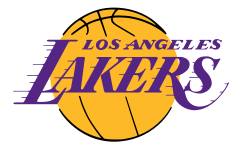
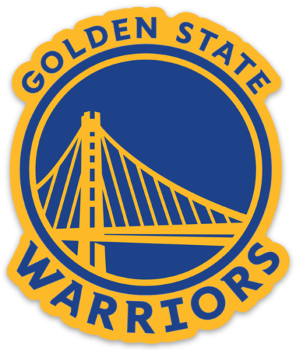
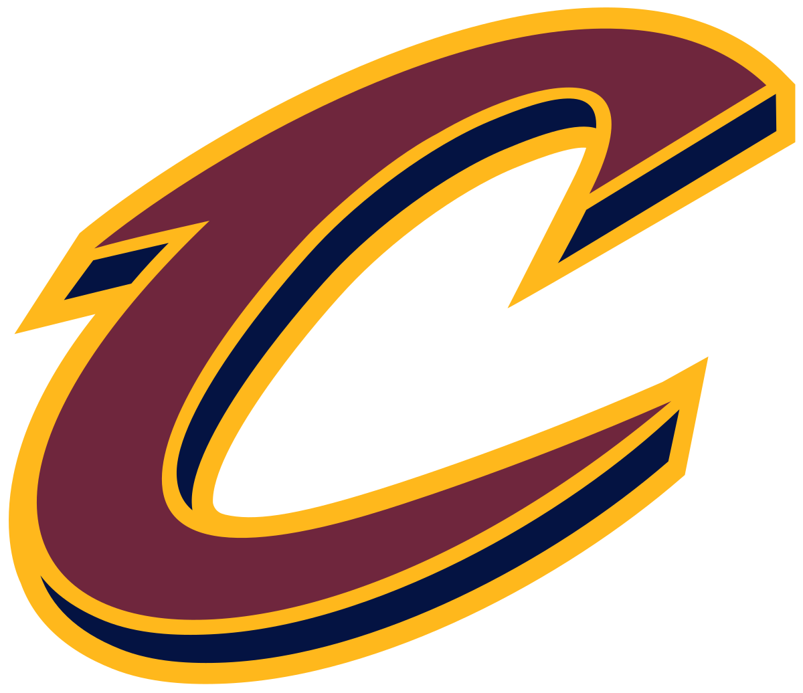

Equipos importantes
A continación encontraras unos cuantos equipos destacables que conforman el plantel de la NBA:
Los Angeles Lakers

Los Angeles Lakers son un equipo profesional de baloncesto de los Estados Unidos con sede en Los Ángeles, California. Compiten en la División Pacífico de la Conferencia Oeste de la National Basketball Association y disputan sus partidos como locales en el Crypto.com Arena, ubicado en el downtown de la ciudad. Sus colores son el púrpura y oro.
Golden State Warriors

Los Golden State Warriors son un equipo profesional de baloncesto de los Estados Unidos con sede en San Francisco, California. Compiten en la División Pacífico de la Conferencia Oeste de la National Basketball Association (NBA) y disputan sus partidos como locales en el Chase Center, ubicado en el barrio sanfranciscano de Mission Bay. Sus colores son el azul y el dorado.
Chicago Bulls

Los Chicago Bulls son un equipo profesional de baloncesto de los Estados Unidos con sede en Chicago, Illinois. Compiten en la División Central de la Conferencia Este de la National Basketball Association y disputan sus partidos como locales en el United Center. Fundado en 1966. Su jugador más emblemático ha sido Michael Jordan, considerado por muchos el mejor jugador de baloncesto de la historia. Sus colores son el rojo, el negro y el blanco.
Cleveland Cavaliers

Los Cleveland Cavaliers (en idioma español: Caballeros de Cleveland), también conocidos con la abreviatura Cavs, son un equipo profesional de baloncesto de los Estados Unidos con sede en Cleveland, Ohio. Compiten en la División Central de la Conferencia Este de la National Basketball Association (NBA) y disputan sus partidos como locales en el Rocket Mortgage FieldHouse. Ganaron su primer título de la NBA en la temporada 2015-16. Sus colores son el vino, el dorado y el negro.